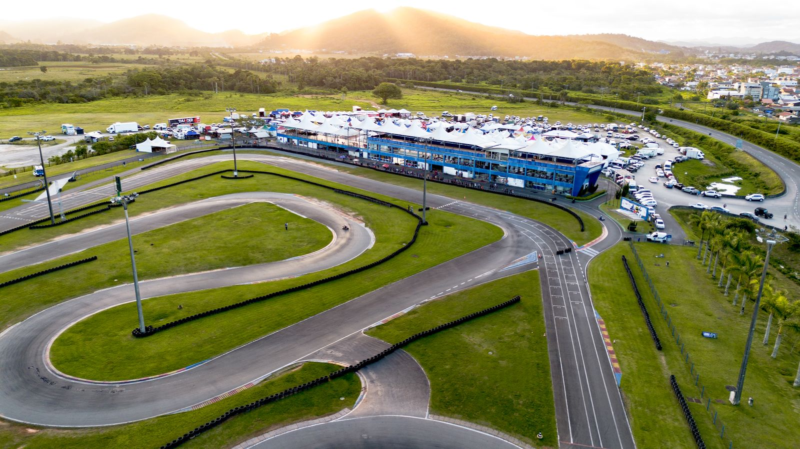

Lieu
Circuit de karting du Mans (Sarthe), à côté du circuit des 24 Heures. Le point d'accueil se trouve à l'entrée du paddock.
Lieu, accès, matériel et accessibilité
Circuit de karting du Mans (Sarthe), à côté du circuit des 24 Heures. Le point d'accueil se trouve à l'entrée du paddock.
Samedi 5 juin 2027. Accueil à 13 h, départ des essais à 14 h, fin des courses vers 18 h 30.
50 € par participation, comprenant le kart, le casque, le chronométrage et l'assurance. Entrée gratuite pour les spectateurs.
Âge minimum : 14 ans, avec autorisation parentale pour les mineurs. Aucune licence ni aucun permis ne sont nécessaires.

Briefing obligatoire, commissaires de piste à chaque virage et secouriste présent toute la journée.